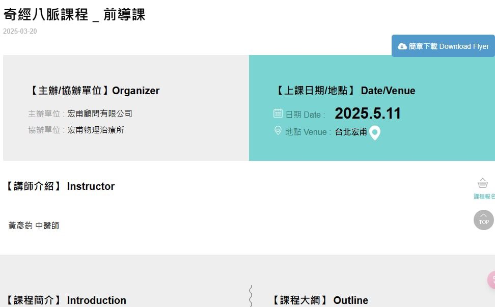

專業間的合作，最重要的元素就是「溝通」，要能有效率的溝通，便是要能在相同的頻率上…
專業間的合作，最重要的元素就是「溝通」，要能有效率的溝通，便是要能在相同的頻率上交換看法、相互共鳴。相互理解，才會有信任，也才能將醫療效能最佳化！
人體就是最好的溝通平台，不論是用經絡、穴道，或是解剖、肌動學，或是心靈、情緒，都是作用在同一個人體，即使用著不同的文字、語言在描述自己所觀察到的現象、事實，文字語言背後所想要傳達的意念、想法一定會有雷同之處，因為我們就是在觀察同一個人體。
因此，才要多方面、多角度的學習與理解別人在想什麼、做什麼，同時也要讓別人來理解自己在想什麼、做什麼。
中醫的領域，看似只要懂中文會讀書，都能入門，但其實中醫的精隨內涵，是需要從典籍、臨床與生活之中去體悟的人文醫學。
5月份有個大任務，要去宏甫簡單前導介紹關於「5月底的奇經八脈課程」的中醫內容，感謝師母Sophia Su給我這個機會，我實在是緊張到爆!!
藉此這個機會，用我們現代能理解的白話語言，向物理治療師們說明、認識中醫的世界觀跟看待人體的角度，對我來說這是個很不容易的任務，花了不少時間準備，也希望能盡可能地傳遞我所知道的中醫典籍裡的觀念，讓更多不同專業領域正式地了解中醫，也期望能藉此與各專業之間相接。
傳統與現代的銜接、共融與運用，中醫師們立足於一個非常關鍵的位置：一個過去、現在與未來共同聚焦的支點，而如何透過這個支點來舉起完善又專業的醫療世界，就得靠大家相互合作來一起努力了！
#宏甫奇經八脈前導課
#我努力我加油我好緊張😅😅😅

